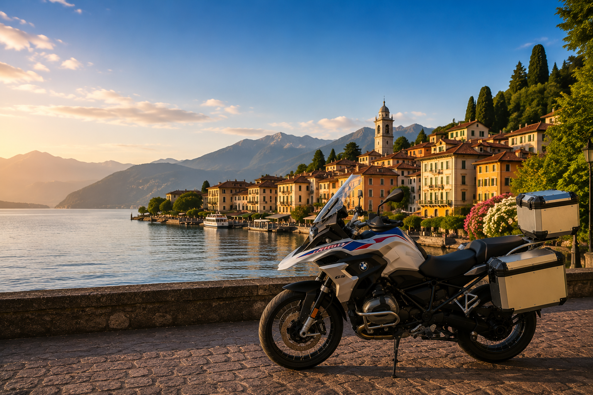

Ampia scelta nel Regno Unito
Scopri su un’unica piattaforma motociclette offerte da concessionari e privati britannici.
Che tu stia cercando una BMW, Honda, Yamaha, Kawasaki, KTM, Ducati, Triumph o Suzuki, AnyBike può trovare la moto giusta nel Regno Unito e coordinarne la consegna al tuo trasportatore per l’Italia.

AnyBike mette in contatto gli acquirenti in Italia con motociclette offerte da concessionari e venditori privati in tutto il Regno Unito, dalla prima richiesta fino alla consegna concordata al trasportatore.
Scopri su un’unica piattaforma motociclette offerte da concessionari e privati britannici.
Indicaci marca, modello, anno, chilometraggio, colore, budget e dotazione desiderata.
AnyBike cerca anche motociclette adatte al di fuori dello stock attualmente pubblicato.
Richiedi foto, video, verifiche del venditore e, quando disponibili, ispezioni indipendenti.
I documenti disponibili e la preparazione concordata nel Regno Unito vengono confermati prima dell’acquisto.
La moto può essere consegnata al trasportatore, magazzino o partner logistico designato.
Spiega ad AnyBike esattamente quale moto stai cercando. Analizziamo il mercato britannico e ti aiutiamo a trovare un veicolo adatto al trasporto verso l’Italia.
Scopri i principali marchi e apri lo stock AnyBike disponibile, filtrato automaticamente per il marchio selezionato.
AnyBike può cercare BMW GS, RT, R nineT, S 1000 RR e altri modelli presso concessionari e privati britannici.
Vedi moto BMW →Trova Yamaha YZF-R1, MT, Ténéré, Tracer e altri modelli in tutto il Regno Unito.
Vedi moto Yamaha →Cerca Honda Africa Twin, Fireblade, Gold Wing, CB e altri modelli sul mercato britannico.
Vedi moto Honda →Scopri Triumph Tiger, Street Triple, Speed Triple, Bonneville e altri modelli britannici.
Vedi moto Triumph →Esplora Kawasaki Ninja, Z, Versys e altre motociclette offerte da concessionari e privati britannici.
Vedi moto Kawasaki →AnyBike può cercare Suzuki Hayabusa, V-Strom, GSX-R e altri modelli nel Regno Unito.
Vedi moto Suzuki →Trova Ducati Multistrada, Panigale, Monster, Diavel e altri modelli.
Vedi moto Ducati →Cerca KTM Adventure, Super Duke, Enduro e altri modelli ad alte prestazioni.
Vedi moto KTM →Apri lo stock disponibile del marchio corrispondente oppure invia una richiesta indicando modello, anno, chilometraggio, colore e dotazione desiderata.
Cerca una Yamaha YZF-R1 nel Regno Unito per anno, colore, chilometraggio e dotazione.
Vedi Yamaha YZF-R1 →Trova Yamaha MT-09 e MT-09 SP presso concessionari e privati britannici.
Vedi Yamaha MT-09 →Cerca versioni Standard, Rally e altre varianti Adventure della Ténéré 700.
Vedi Yamaha Ténéré 700 →AnyBike può cercare BMW R 1300 GS Standard, Adventure, Triple Black e Option 719.
Vedi BMW R 1300 GS →Trova Honda Africa Twin manuale, DCT o Adventure Sports nel Regno Unito.
Vedi Honda Africa Twin →Cerca una Honda Fireblade per generazione, colore, chilometraggio e specifiche.
Vedi Honda Fireblade →Trova Triumph Tiger 900 GT, Rally e Pro presso concessionari e privati.
Vedi Triumph Tiger 900 →Indica anno, colore, chilometraggio e dotazione desiderati.
Vedi Kawasaki Ninja ZX-10R →Cerca generazioni precedenti o attuali della Suzuki Hayabusa.
Vedi Suzuki Hayabusa →Trova Ducati Multistrada V4, V4 S e Rally sul mercato britannico.
Vedi Ducati Multistrada V4 →Richiedi una KTM 1290 Super Adventure, incluse le varianti S e R.
Vedi KTM 1290 Super Adventure →Indica ad AnyBike marca, modello, anno, chilometraggio, colore e budget.
Richiedi un’altra ricerca →Le moto aggiunte di recente vengono caricate direttamente dallo stock AnyBike. Apri un annuncio per visualizzare i dettagli completi e inviare una richiesta.
AnyBike vende e ricerca motociclette. Gli acquirenti possono scegliere il proprio trasportatore oppure concordare una consegna adeguata nel Regno Unito. Dazi, imposte, pratiche di importazione, conformità tecnica e immatricolazione devono essere verificati per ogni moto prima dell’acquisto.
Per Milano e il nord-ovest, la moto può essere consegnata a un trasportatore stradale o a un operatore di groupage scelto dall’acquirente.
Le rotte verso Torino, Genova e il nord-ovest possono essere organizzate tramite trasporto stradale o consegna a un deposito concordato.
Per il nord-est, AnyBike può coordinare la consegna nel Regno Unito al trasportatore designato dall’acquirente.
I corridoi stradali verso Bologna, Firenze, Livorno e le regioni centrali offrono diverse opzioni di trasporto per motociclette provenienti dal Regno Unito.
Per Roma, il Lazio, le Marche, l’Umbria e l’Abruzzo, specifica ad AnyBike la destinazione, il trasportatore e i documenti richiesti.
Le destinazioni meridionali e insulari possono richiedere un ulteriore coordinamento con operatori marittimi e agenti locali.
Sì. Consulta lo stock disponibile oppure invia ad AnyBike una richiesta indicando marca, modello, anno, chilometraggio, colore e dotazione.
Sì. AnyBike può cercare presso concessionari, privati e partner britannici motociclette non ancora presenti nello stock pubblico.
Sì. I professionisti possono discutere acquisti singoli, ricerche periodiche, stock commerciale o lotti più grandi.
Le opzioni dipendono dalla moto e dal venditore. Chiedi ad AnyBike foto, video, verifiche o ispezioni indipendenti disponibili.
Sì. La moto può essere consegnata a un trasportatore, magazzino, deposito o partner logistico concordato.
Sì. Puoi nominare il tuo trasportatore preferito e AnyBike coordinerà la consegna della moto nel Regno Unito.
Sì. Dazi, IVA all’importazione e altri costi possono dipendere dalla moto e dall’operazione. Verificali prima dell’acquisto con l’Agenzia delle Dogane e dei Monopoli o con il tuo rappresentante doganale.
No, non è possibile garantirlo per ogni veicolo. Prima dell’acquisto verifica identificazione, conformità, eventuali modifiche, certificato di conformità, collaudo e requisiti della Motorizzazione Civile.
Dipende dalla singola moto. AnyBike conferma prima della vendita i documenti disponibili, tra cui V5C, fattura, cronologia di manutenzione, chiavi e altri documenti del veicolo.
Consulta lo stock disponibile e invia una richiesta sulla moto che ti interessa. Se il modello non è pubblicato, usa il servizio di ricerca personalizzata.
Scopri le moto attualmente disponibili oppure indica ad AnyBike esattamente cosa stai cercando, da una singola moto a un lotto professionale.